2015年貪瀆起訴視覺化
- 資料來源為法務部廉政署
- 若無法正常顯示建議更換其他瀏覽器，如IE10以上或是Safari、Chrome等。
公務員貪瀆情況反映政府清廉程度，2011年廉政署的成立就是為了防止降低貪瀆犯罪的發生，打擊貪腐。
此視覺化圖表以2015年期間各地檢署起訴之貪瀆案件涉案公務員共計297人次，包含各種性別、涉案類別、職務層級及犯罪時之服務機關，呈現其相互關聯及比例。
此視覺化圖表以2015年期間各地檢署起訴之貪瀆案件涉案公務員共計297人次，包含各種性別、涉案類別、職務層級及犯罪時之服務機關，呈現其相互關聯及比例。
圖表說明
此視覺化圖表主要呈現2015年公務員貪瀆案件的相關資訊，我們可以透過「性別」、「涉案類別」、「職務層級」、「犯罪時服務機關」來看這4個要素之間的相互關係。
2015年公務員性別的比例約為男女各半（男性26萬4,261人，女性26萬1,959人，行政院人事行政總處2015年第 4季統計資料），從本圖表中可發現，男性人數為264人，女性為33人，男性的比例趨近9成。
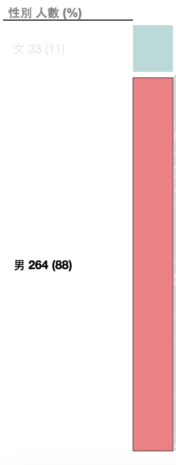
以男性與涉案類別、犯罪時服務機關、職務層級中，三者的交互關係呈現如下：
- 【男性 vs 涉案類別】：人次最高的涉案類別為警政
- 【男性 vs 犯罪時服務機關】：人次最高的犯罪時服務機關為地方行政機關
- 【男性 vs 職務層級】：人次最高的職務層級為中層委任
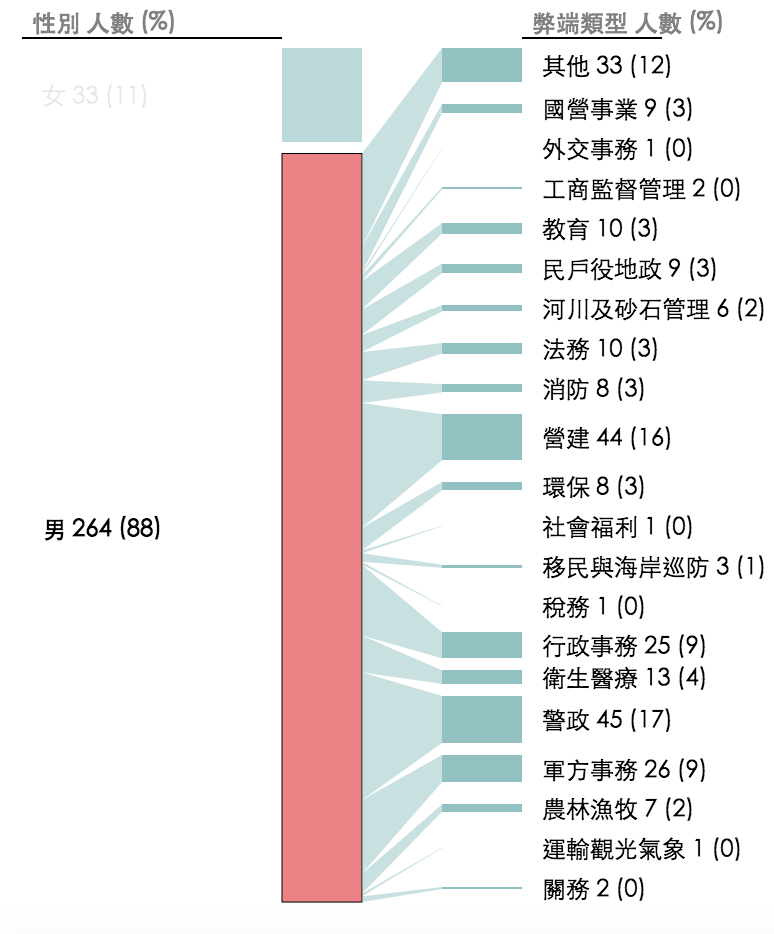
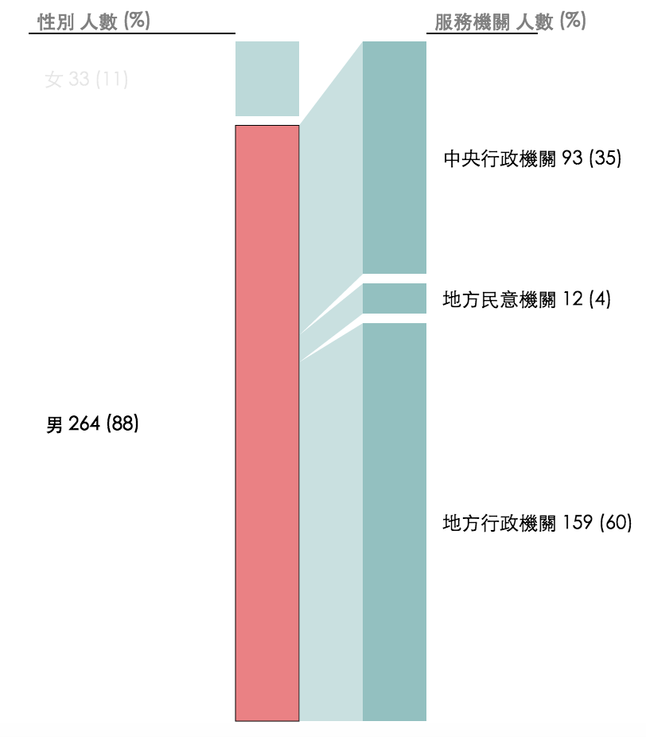
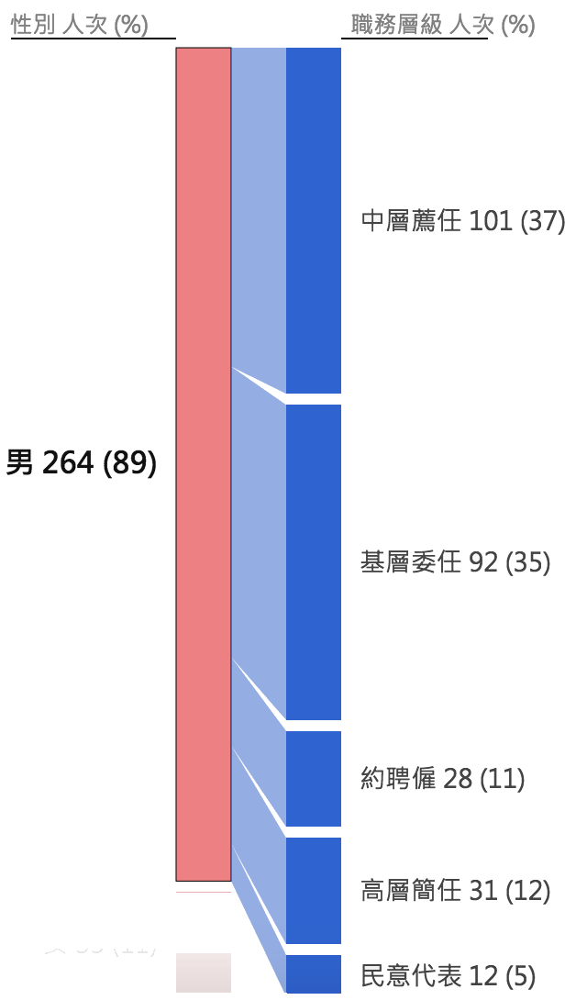
女性則為:
- 【女性 vs 涉案類別】：人次最高的涉案類別為行政，佔了42%
- 【女性 vs 犯罪時服務機關】：人次最高的犯罪時服務機關為地方行政機關
- 【女性 vs 職務層級】：人次最高的職務層級為中層薦任
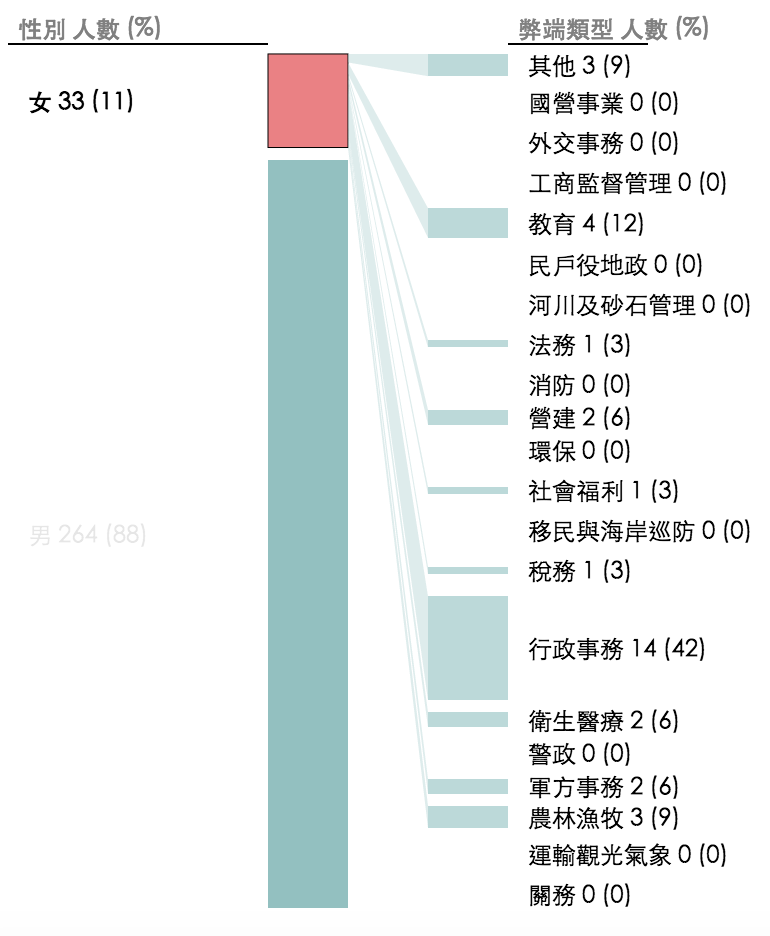
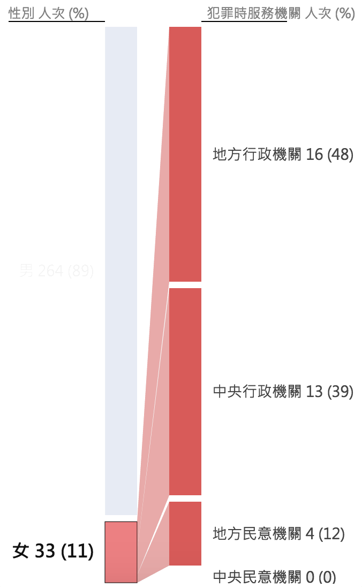
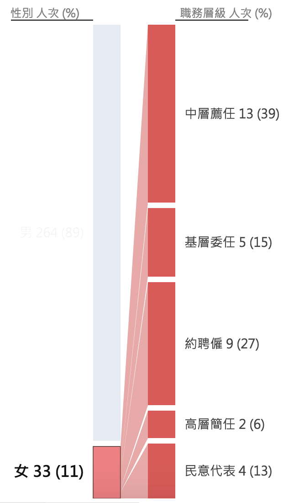
涉案類別中營建、警政、行政各佔了1成以上的比例，是較多的類型，有部分類型是只有男性人員，例如國營事業、外交事務等。
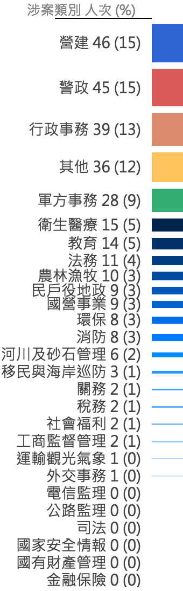
以最多的營建類來看:
- 【營建 vs 性別】：人次最高的性別為男性，佔了95%
- 【營建 vs 犯罪時服務機關】：人次最高的服務機關為地方行政機關，佔了86%
- 【營建 vs 職務層級】：人次最高的職務層級為中層薦任
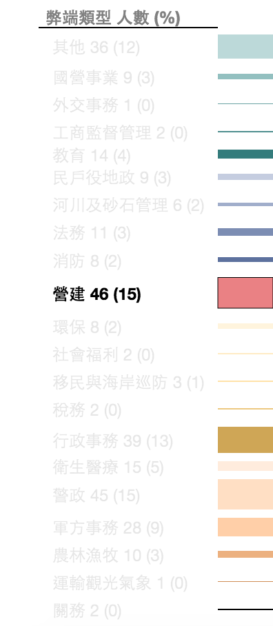
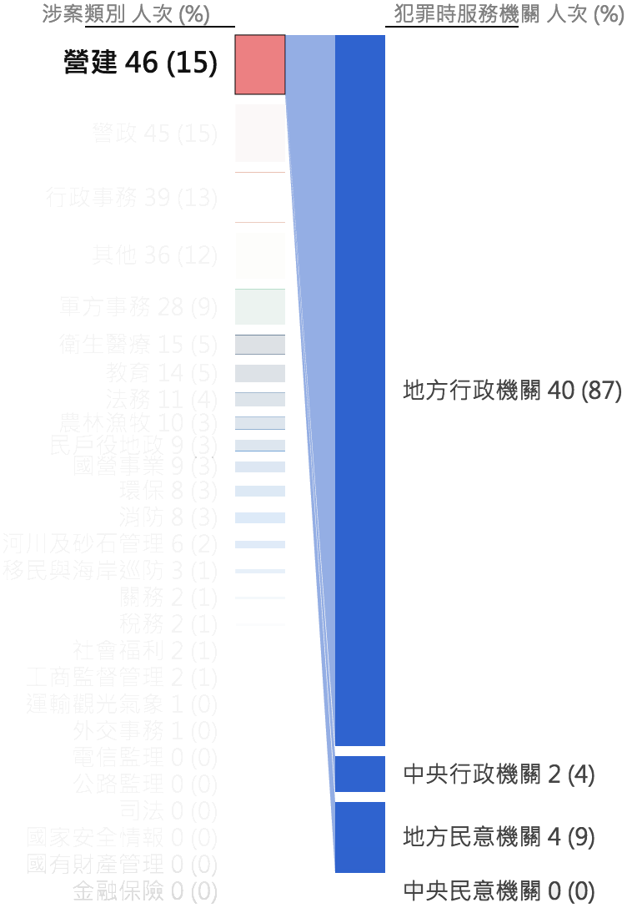
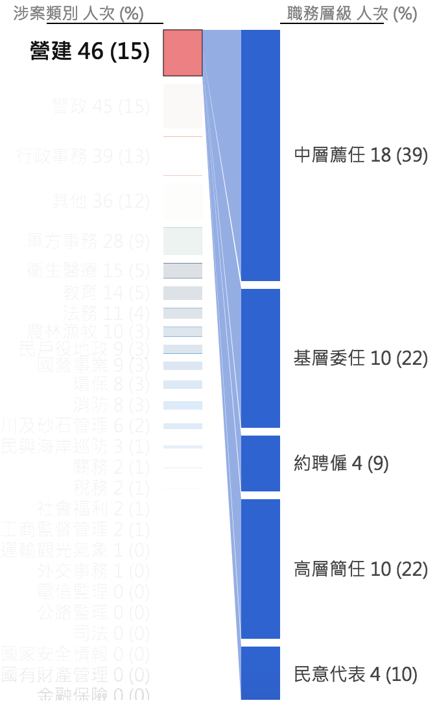
公務人員官職等主要可分為：委任一職等至委任五職等、薦任六職等至九職等、簡任十職等至簡任十四職等，本圖表統計包含簡任、薦任、委任或相當層級的公務員。從本圖表中可發現，中層薦任及基層委任共佔了7成比例。
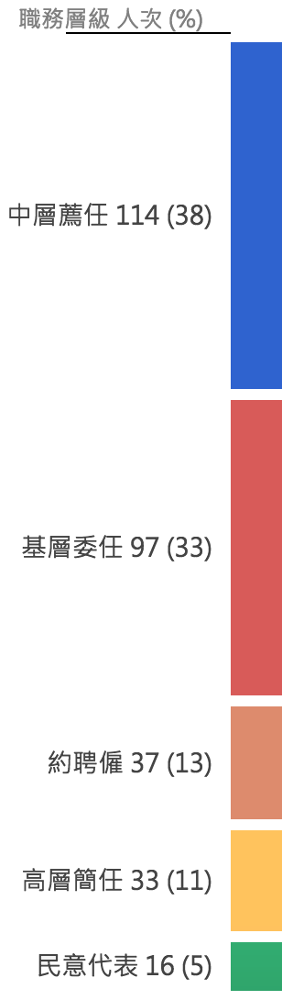
以最多的中層薦任來看:
- 【中層薦任 vs 性別】：人次最高的性別為男性
- 【中層薦任 vs 涉案類別】：人次最高的涉案類別為營建
- 【中層薦任 vs 犯罪時服務機關】：人次最高的服務機關為地方行政機關
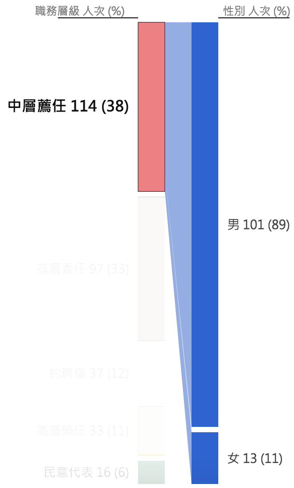
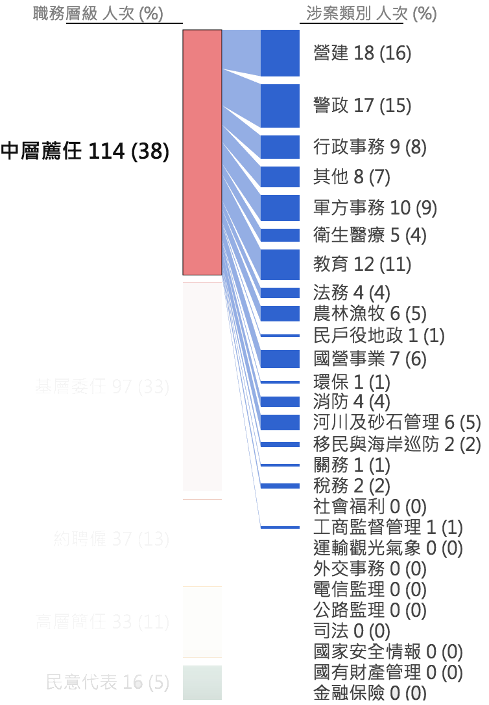
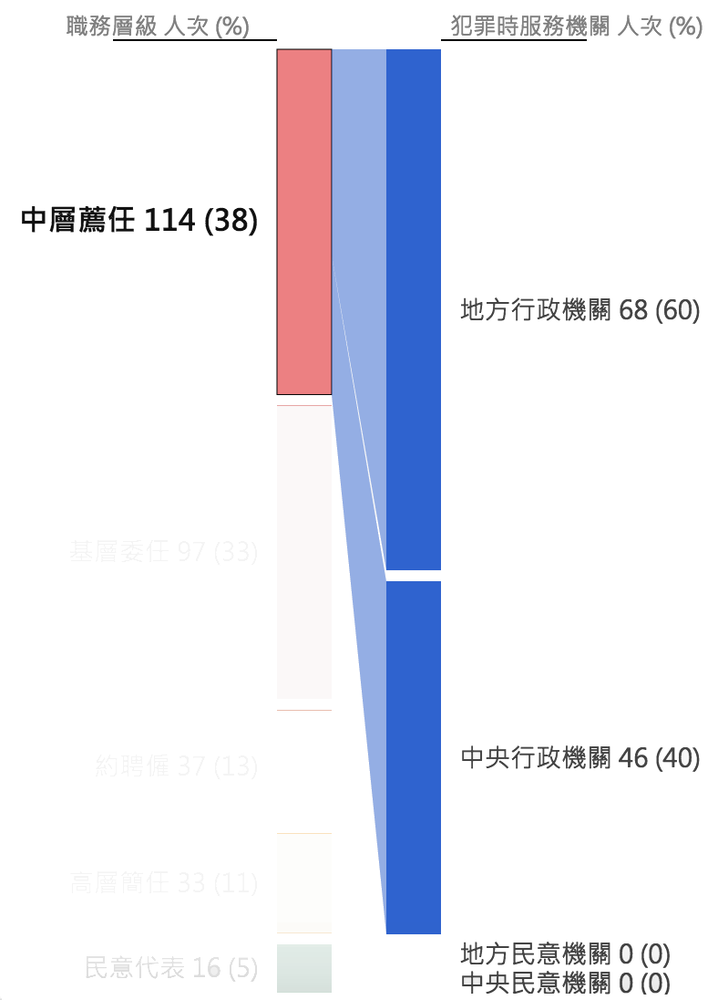
犯罪時服務機關則以地方行政機關為最多。
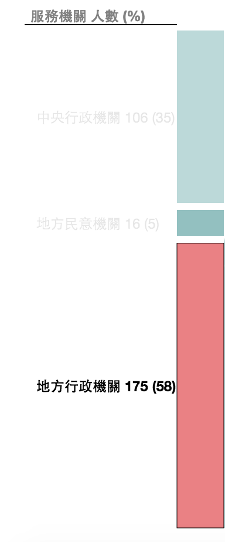
以最多的地方行政來看:
- 【地方行政機關 vs 性別】：人次最高的性別為男性
- 【地方行政機關 vs 涉案類別】：人次最高的涉案類別為警政
- 【地方行政機關 vs 職務層級】：人次最高的職務層級為中層薦任和基層委任
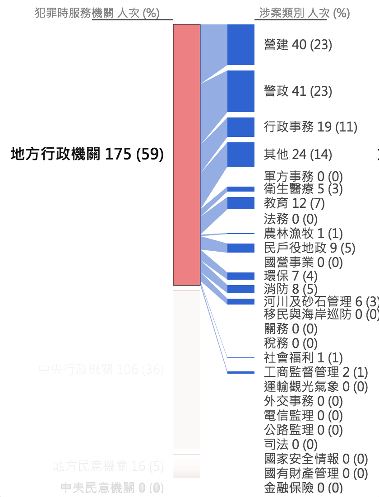
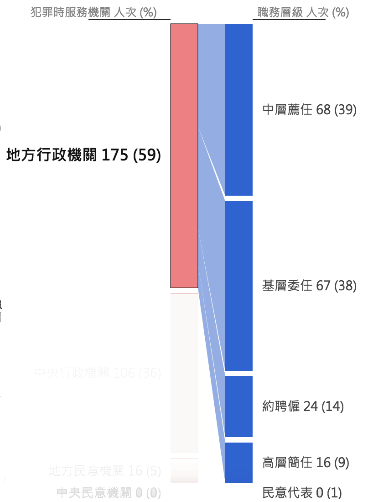
統計資料說明：
本圖表統計資料係以各地檢署（不含最高法院檢察署特別偵查組）檢察官偵辦貪瀆案件，法務部統計處於104年1-12月結案之起訴書為基準，故包含其他期間起訴，惟於104年1-12月開始併其他追加起訴案件結案之相關起訴書。
本圖表統計資料係依起訴書歸類涉案類別，該起訴書所列之起訴公務員人數均歸類為該涉案類別，例如起訴書經研判涉案類別，例如起訴書經研判涉案類別為「關務」類，其涉案人員如非屬財政部關務署，亦會含括至此類別，因此涉案類別並不等同於機關別。
涉案人次係以該起訴書起訴人數為主，如2份不同起訴書起訴同一人，以2人次計算。